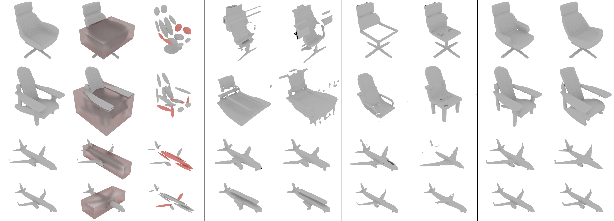
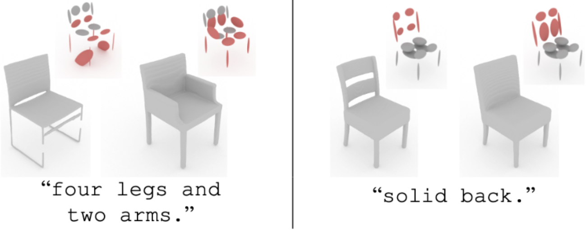

Generation Output
DPM
PVD
LION
Voxel-GAN
Neural Wavelet
SPAGHETTI
Diff. of z
Diff. of p
Guassians
Ours
Part Mixing Refinement
GT
Bounding Box
Gaussians
ShapeFormer
Neural Wavelet
SALAD (Ours)

Text-guided Part Completion

Bibtex
@article{Koo:2023Salad,
title = {SALAD: Part-Level Latent Diffusion for 3D Shape Generation and Manipulation},
author = {Juil Koo and Seungwoo Yoo and Minh Hieu Nguyen and Minhyuk Sung},
year = 2023,
journal = {arXiv preprint arXiv:2303.12236}
}
Acknowledgement